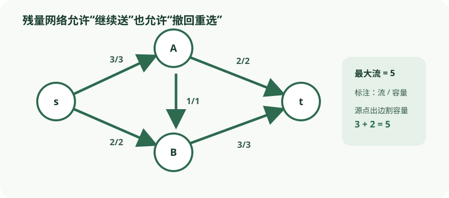

用流量/容量与残量边检查每次增广，并从源点出边割确认最优性。
依据本地课程资料 lectures/chap7.pdf 重绘；交互用于解释算法状态与证明不变量，不替代正文中的完整论证。

CS170 · 第 8 讲
从建模、对偶与几何解释走向最大流、最小割和可用 LP 表达的组合问题。
线性规划（Linear Programming, LP）是描述一类广泛优化问题的数学框架。在线性规划问题中，我们给定一组变量，需要为它们赋予实数值，使得：（1）满足一组线性方程和/或线性不等式（约束条件）；（2）最大化或最小化一个给定的线性目标函数。
以巧克力厂的利润最大化问题为例。设 \(x_1\)、\(x_2\) 分别为每天生产的 Pyramide 和 Pyramide Nuit 盒数，利润分别为每盒 \$1 和 \$6。需求限制为 \(x_1 \leq 200\)、\(x_2 \leq 300\)，总产能限制为 \(x_1 + x_2 \leq 400\)，且 \(x_1, x_2 \geq 0\)。该问题的线性规划如下：
\[ \begin{aligned} \text{max} \quad & x_1 + 6x_2 \\ \text{s.t.} \quad & x_1 \leq 200 \\ & x_2 \leq 300 \\ & x_1 + x_2 \leq 400 \\ & x_1, x_2 \geq 0 \end{aligned} \]
在二维平面中，每个线性不等式对应一个半空间，所有约束的交集构成一个凸多边形——即可行域（feasible region）。目标函数值为常数 \(c\) 的点落在直线 \(x_1 + 6x_2 = c\) 上，斜率为 \(-1/6\)。随着 \(c\) 增大，这条"利润线"向右上方平行移动。最大化利润意味着将直线尽可能向上推，同时仍与可行域接触。最后一个接触点必然是多边形的某个顶点。
这是一个普遍规律：线性规划的最优解在可行域的顶点处取得。例外情况有两种：（1）问题不可行（infeasible），约束过紧导致无解，例如 \(x \leq 1\) 且 \(x \geq 2\)；（2）可行域无界（unbounded），目标函数可以任意大，例如最大化 \(x_1 + x_2\) 且仅有非负约束。
单纯形法（Simplex Method）由 George Dantzig 于 1947 年提出，正是利用这一几何性质：从某个顶点（如原点）出发，反复沿着多边形边界移向目标函数值更优的相邻顶点，直到不存在更优邻居为止。为何局部最优即全局最优？考虑过当前顶点的等值线：由于所有邻居都位于该线的一侧，整个可行域也必然位于同侧，因此当前顶点就是全局最优。
考虑上述巧克力厂问题。可行域由五个约束的交集形成，其顶点可通过求解约束边界的交点得到。关键顶点包括 \((0,0)\)、\((200,0)\)、\((200,200)\)、\((100,300)\) 和 \((0,300)\)。计算各顶点的目标函数值：
\((0,0)\): \(0 + 0 = 0\)
\((200,0)\): \(200 + 0 = 200\)
\((200,200)\): \(200 + 1200 = 1400\)
\((100,300)\): \(100 + 1800 = 1900\)
\((0,300)\): \(0 + 1800 = 1800\)
最优解为 \((x_1, x_2) = (100, 300)\)，最大利润 \$1900。最优解出现在直线 \(x_1 + x_2 = 400\) 与 \(x_2 = 300\) 的交点处，这正是可行域的一个顶点。如果利润线的斜率恰好等于某条边的斜率，则最优解可能是一条边上的所有点，但顶点处必然也是最优的。
引入第三种巧克力 Pyramide Luxe（利润 \$13/盒）后，问题拓展到三维。变量 \(x_1, x_2, x_3\) 分别代表三种巧克力的日产量，约束更新为 \(x_1 \leq 200\)、\(x_2 \leq 300\)、\(x_1 + x_2 + x_3 \leq 400\)、\(x_2 + 3x_3 \leq 600\)（Nuit 和 Luxe 共用包装设备）。目标函数为 \(\max \, x_1 + 6x_2 + 13x_3\)。此时可行域是三维空间中的多面体（polyhedron），最优解位于顶点 \((0, 300, 100)\)，总利润 \$3100。
更复杂的应用如生产计划问题：某地毯公司需应对季节性需求波动，通过调整工人数量（\(w_i\)）、加班产量（\(o_i\)）、雇佣/解雇（\(h_i, f_i\)）和库存（\(s_i\)）来最小化总成本。该问题包含 72 个变量和数十个约束，但本质上仍是线性规划，单纯形法可在不到一秒内求解。
带宽分配问题则是另一种形式：在网络中为用户对 A-B、B-C、A-C 分配带宽以最大化收益，每条连接有最小带宽需求，每条边有容量限制。此问题同样可建模为线性规划。
问题归约（reduction）是算法设计中的重要思想：若问题 P 的任意实例可转化为问题 Q 的实例，且 Q 的解可推导回 P 的解，则称 P 归约到 Q。例如最长递增子序列归约到 DAG 上的最长路径，后者又归约到最短路径（通过取负权值）。线性规划正是许多问题的"归约目标"——大量问题可归约为 LP。
线性规划有多种变体，可通过简单变换相互归约：（1）最大化与最小化可通过对目标函数系数乘 \(-1\) 互换；（2）不等式约束可通过引入松弛变量（slack variable）转为等式；（3）等式约束可拆分为一对不等式；（4）无约束变量 \(x\) 可用两个非负变量 \(x^+, x^-\) 替换，令 \(x = x^+ - x^-\)。通过这些变换，任何 LP 可化为标准形：变量非负、约束为等式、目标为最小化。
矩阵向量形式提供了简洁表达：\(\max \, \mathbf{c}^T \mathbf{x}\) s.t. \(A\mathbf{x} \leq \mathbf{b}, \mathbf{x} \geq 0\)。
最大流问题（Maximum Flow）是线性规划的重要应用实例。给定有向图 \(G = (V, E)\)、源点 \(s\)、汇点 \(t\) 和边容量 \(c_e > 0\)，流（flow）是为每条边分配的值 \(f_e\)，满足：（1）容量限制 \(0 \leq f_e \leq c_e\)；（2）流量守恒——除 \(s, t\) 外，每个节点的流入等于流出。流的大小为从 \(s\) 流出的净流量。
最大流问题可归约为线性规划，但单纯形法在此问题上有直观解释：从零流开始，反复在残差网络（residual network）\(G_f\) 中寻找一条从 \(s\) 到 \(t\) 的增广路径，并沿路径尽可能增加流量。残差网络中，若原边未满流则可正向增流，若反向边有流则可"取消"（反向增流）。这一过程持续直到残差网络中不存在 \(s\)-\(t\) 路径。
最大流最小割定理（Max-flow Min-cut Theorem）揭示了深层联系：一个 \((s,t)\)-割将顶点分为两组 \(L\) 和 \(R\)（\(s \in L, t \in R\)），其容量为从 \(L\) 到 \(R\) 的边容量之和。任何流的值不超过任何割的容量。定理断言：最大流的值等于最小割的容量。算法终止时，残差网络中从 \(s\) 可达的节点构成 \(L\)，恰好给出一个容量等于流值的割，从而证明了最优性。
效率方面，每次迭代可在 \(O(|E|)\) 时间内找到增广路径。若使用 BFS 选择最短增广路径，迭代次数为 \(O(|V| \cdot |E|)\)，总时间为 \(O(|V| \cdot |E|^2)\)。
二分图匹配问题可归约为最大流：添加源点连接所有左侧节点，汇点连接所有右侧节点，所有边容量设为 1。若所有容量为整数，则最优流也是整数值，对应一个匹配。
考虑石油管道网络（图7.4），边容量如图所示。从零流开始：
第一次迭代：在残差网络中找到路径 \(s \to a \to e \to t\)，瓶颈容量为 3，沿此路径增流 3 单位。
第二次迭代：找到路径 \(s \to b \to c \to e \to t\)，瓶颈为 2，增流 2 单位。
第三次迭代：找到路径 \(s \to b \to d \to t\)，瓶颈为 2，增流 2 单位（其中利用反向边调整流量）。
最终流量为 7。此时残差网络中 \(t\) 不可达，可达集 \(L = \{s, a, b\}\) 构成一个容量为 7 的割，恰好等于流值，证明最优性。
对偶性（Duality）是线性规划最深刻的结构之一。回顾巧克力厂问题，最优解为 \((100, 300)\)，利润 1900。我们如何验证这确实是最优？注意到将第二个不等式乘以 5、第三个不等式乘以 1 后相加：
\[5(x_2 \leq 300) + 1(x_1 + x_2 \leq 400) \implies x_1 + 6x_2 \leq 1900\]
这给出了利润的上界 1900，恰好等于当前解，从而证明最优性。这些神秘的乘数 \((0, 5, 1)\) 正是对偶变量。
一般地，对于原问题（primal）：
\[ \begin{aligned} \text{max} \quad & \mathbf{c}^T \mathbf{x} \\ \text{s.t.} \quad & A\mathbf{x} \leq \mathbf{b} \\ & \mathbf{x} \geq 0 \end{aligned} \]
其对偶问题（dual）为：
\[ \begin{aligned} \text{min} & \quad \mathbf{y}^T \mathbf{b} \\ \text{s.t.} & \quad \mathbf{y}^T A \geq \mathbf{c}^T \\ & \quad \mathbf{y} \geq 0 \end{aligned} \]
每个原约束对应一个对偶变量，每个原变量对应一个对偶约束。由构造，对偶的任意可行值是原问题最优值的上界（弱对偶性）。对偶定理（Duality Theorem）断言：若原问题有界最优解，则对偶也有界最优解，且两者最优值相等——对偶间隙为零。
更一般形式中，等式约束对应的对偶变量无符号限制；非负变量对应不等式对偶约束，无约束变量对应等式对偶约束。对偶性揭示了优化问题的内在对称结构，也是单纯形算法正确性的理论基础。
零和博弈是矩阵博弈的一种经典模型，包含两个参与者：行玩家（Row）和列玩家（Column）。他们各自从动作集中选择一招，然后查阅收益矩阵 \(G\) 中对应的条目，Column 向 Row 支付该数额——这是 Row 的收益，也是 Column 的损失。
在石头剪刀布的收益矩阵中，主对角线为 0，非对角线条目为 1 或 \(-1\)。若行玩家总是出同一招，列玩家很快就能反制。因此行玩家应当混合她的选择：引入混合策略（mixed strategy），即在每一轮以概率 \(x_1, x_2, x_3\) 分别出 \(r, p, s\)，由向量 \(\mathbf{x} = (x_1, x_2, x_3)\) 描述，其中 \(x_i > 0\) 且 \(\sum x_i = 1\)。类似地，Column 的混合策略为 \(\mathbf{y} = (y_1, y_2, y_3)\)。
在任意一轮中，Row 出第 \(i\) 招且 Column 出第 \(j\) 招的概率为 \(x_i y_j\)，因此期望收益为 \[ \sum_{i,j} G_{ij} x_i y_j.\] Row 希望最大化它，Column 希望最小化它。
以"完全随机"策略 \(\mathbf{x} = (1/3, 1/3, 1/3)\) 为例：由于矩阵每一列的和都是零，直接计算 \[ \sum_{i,j} G_{ij} x_i y_j = \sum_j y_j \left(\sum_i \frac{1}{3} G_{ij}\right) = \sum_j y_j \cdot 0 = 0.\] 因此行玩家通过完全随机策略迫使期望收益为零，无论 Column 怎么做。对称地，Column 也能迫使期望收益为零。于是双方最优策略都是完全随机，期望收益为零。
更令人惊讶的是：若双方都最优地博弈，提前公布自己的策略并不会损害自己！这来自线性规划对偶性。用一个非对称博弈说明：Column 对 \(\mathbf{x}\) 的最优反应是取两个纯策略期望损失中较小者的纯策略。Row 应当选择 \(\mathbf{x}\) 来最大化这个最小值： \[ \max_{\mathbf{x}} \min\{3x_1 + 2x_2,\; x_1 - x_2\}.\] 这可以写成一个线性规划： \[ \begin{aligned} \max \ & z \\ \text{s.t. } & z \leq 3x_1 + 2x_2 \\ & z \leq x_1 - x_2 \\ & x_1 + x_2 = 1 \\ & x_1, x_2 \geq 0. \end{aligned}\] 对称地，Column 先宣布策略时，他的问题是一个极小化 LP，恰好是上述 LP 的对偶。因此两个 LP 有相同的最优值 \(V\)，称为博弈的值（value of the game）。在本例中 \(V = 1/7\)，当 Row 采用 \((3/7, 4/7)\)、Column 采用 \((2/7, 5/7)\) 时达成。
推广到任意博弈，得到最小最大定理（min-max theorem）： \[ \max_{\mathbf{x}} \min_{\mathbf{y}} \sum_{i,j} G_{ij} x_i y_j = \min_{\mathbf{y}} \max_{\mathbf{x}} \sum_{i,j} G_{ij} x_i y_j.\] 这等价于线性规划对偶性，保证了双方都存在最优混合策略且达到相同的值。
单纯形算法（simplex algorithm）是求解线性规划的经典迭代方法。其高层策略是：从可行域的一个顶点出发，反复移动到目标函数值更优的邻居顶点，直到当前顶点即为最优。
在 \(n\) 维空间中，每个变量赋值对应 \(\mathbb{R}^n\) 中的一点。线性方程定义超平面，线性不等式定义半空间。线性规划的可行域是若干半空间的交，构成一个凸多面体（convex polyhedron）。
顶点与邻居：选取若干不等式，若存在唯一一点使它们取等号且该点可行，则它是一个顶点。在 \(n\) 维空间中，每个顶点由恰好 \(n\) 个不等式定义。两个顶点若共享 \(n-1\) 个定义不等式，则它们是邻居。
算法流程：每次迭代有两项任务：（1）判断当前顶点是否最优；（2）决定下一步移向哪个邻居。
若当前顶点恰为原点，则任务变得简单。考虑标准 LP \(\max \mathbf{c}^T \mathbf{x}\) s.t. \(A\mathbf{x} \leq \mathbf{b},\; \mathbf{x} \geq \mathbf{0}\)：
原点最优当且仅当所有 \(c_i \leq 0\)（由 \(\mathbf{x} \geq \mathbf{0}\) 知不能再增大目标值）。
若有某个 \(c_i > 0\)，则可增加 \(x_i\) 来提升目标值，直到某个先前松弛的不等式变为紧（tight），此时得到新的顶点。
若当前顶点 \(\mathbf{u}\) 不在原点，则通过坐标变换将其移到原点。定义局部坐标 \(y_i = b_i - \mathbf{a}_i \cdot \mathbf{x}\)，即到各"墙壁"的距离。这组关系可逆，从而把整个 LP 用 \(\mathbf{y}\) 重写。重写后的 LP 满足：（1）包含不等式 \(\mathbf{y} \geq \mathbf{0}\)；（2）\(\mathbf{u}\) 本身是 \(\mathbf{y}\) 空间的原点；（3）目标函数变为 \(\max c_u + \tilde{\mathbf{c}}^T \mathbf{y}\)。于是又回到了原点情形！
当局部成本向量 \(\tilde{\mathbf{c}}\) 的所有分量 \(\leq 0\) 时，当前顶点局部最优，也就是全局最优；否则沿某个 \(\tilde{c}_i > 0\) 的维度移动到邻居顶点。在非退化假设下，每次移动严格改进目标值，算法必终止。
下面跟随教材中的例子，演示单纯形算法的完整迭代过程。
初始线性规划：
max 2x₁ + 5x₂
s.t. 2x₁ - x₂ ≤ 4 (1)
x₁ + 2x₂ ≤ 9 (2)
x₁ + x₂ ≤ 3 (3)
x₁ ≥ 0 (4)
x₂ ≥ 0 (5)
第 1 轮：当前顶点为原点，由约束 (4)(5) 定义，目标值 0。 \(c_2 = 5 > 0\)，故增加 \(x_2\)。释放约束 (5)，\(x_2\) 增大至约束 (3) 变紧，即 \(x_2 = 3\)。新顶点由 (3)(4) 定义。
局部坐标：\(y_1 = x_1,\; y_2 = 3 + x_1 - x_2\)。重写后的 LP： \(\max\; 15 + 7y_1 - 5y_2\)。
第 2 轮：当前顶点目标值 15。 \(\tilde{c}_1 = 7 > 0\)，故增加 \(y_1\)。释放约束 (4)，\(y_1\) 增大至约束 (2) 变紧，即 \(y_1 = 1\)。新顶点由 (2)(3) 定义。
局部坐标：\(z_1 = 3 - 3y_1 + 2y_2,\; z_2 = y_2\)。重写后的 LP： \(\max\; 22 - \frac{7}{3}z_1 - \frac{1}{3}z_2\)。
当前顶点目标值 22，所有 \(\tilde{c}_i < 0\)，已达最优。
代回原变量：最优解 \((x_1, x_2) = (1, 4)\)，最优值 22。
寻找起始顶点：并非所有 LP 都以原点为可行。标准型 \(\min \mathbf{c}^T \mathbf{x}\) s.t. \(A\mathbf{x} = \mathbf{b},\; \mathbf{x} \geq \mathbf{0}\)。首先确保所有 \(b_i \geq 0\)（若 \(b_i < 0\) 则方程两边乘 \(-1\)）。然后引入 \(m\) 个人工变量（artificial variables）\(z_1, \ldots, z_m \geq 0\)，在第 \(i\) 个方程左边加上 \(z_i\)，目标改为最小化 \(z_1 + \cdots + z_m\)。新 LP 有显然的起始顶点（\(z_i = b_i\)，其余变量为零）。求解后：若最优值为零，则所有 \(z_i = 0\)，得到原 LP 的一个可行顶点；若最优值为正，则原 LP 不可行。
退化（degeneracy）：若一个顶点由超过 \(n\) 个面相交而成（如由 4 个不等式定义的 3 维顶点），则称其为退化的。单纯形可能因邻居与当前顶点目标值相同而陷入循环。修复方法之一是扰动（perturbation）：将每个 \(b_i\) 改为 \(b_i \pm \epsilon_i\)，微小随机扰动使各线性系统的解彼此区分，从而将退化的顶点分裂成两个相近的非退化顶点。
无界：若 LP 的目标函数可以任意大，单纯形在探索邻居时会发现去掉一个不等式后方程组欠定且有无穷多解，且解空间中有一条直线可使目标无限增大，此时单纯形会报告无界并停机。
运行时间：每次迭代若朴素地检查所有潜在邻居需 \(O(mn^4)\) 时间，但利用局部坐标视图可将每次迭代开销降至 \(O(mn)\)。迭代总数最多为 \(\binom{m+n}{n}\)（顶点数上界），这是关于 \(n\) 的指数函数。事实上存在单纯形需要指数次迭代的 LP 例子，因此单纯形最坏情况是指数时间算法。然而这些指数例子在实践中极少出现，单纯形在现实中通常极快。
高斯消元法（Gaussian elimination）用于求解顶点坐标对应的线性方程组，复杂度 \(O(n^3)\)。
多项式时间算法：1979 年 Khachiyan 提出椭球法（ellipsoid algorithm），将解限制在逐渐缩小的椭球内，是第一个多项式时间 LP 算法。Karmarkar 后来提出内点法（interior point method），在可行域内部而非边界上寻优，兼具理论多项式保证与实际高效性。
CIRCUIT VALUE 问题是：给定一个布尔电路（由输入门、AND 门、OR 门、NOT 门组成的有向无环图），按拓扑序应用布尔逻辑后，输出门是否求值为真？
这个问题可以自然地归约为线性规划。为每个门 \(g\) 创建变量 \(x_g\)，约束 \(0 \leq x_g \leq 1\)，并根据门的类型添加约束：
NOT 门：\(x_g = 1 - x_h\)
AND 门：\(x_g \leq x_h,\; x_g \leq x_{h'},\; x_g \geq x_h + x_{h'} - 1\)
OR 门：\(x_g \geq x_h,\; x_g \geq x_{h'},\; x_g \leq x_h + x_{h'}\)
输入门 true：\(x_g = 1\)；false：\(x_g = 0\)
这些约束迫使每个门取到正确的布尔值（0 代表 false，1 代表 true）。无需优化任何目标函数，从输出门对应的变量 \(x_o\) 即可读出答案。
CIRCUIT VALUE 的意义在于：它本质上是最一般的多项式时间可解问题。任何多项式时间算法最终都运行在计算机上，而计算机本质上是一个布尔组合电路。若算法在多项式时间内运行，则可展开为多项式多个电路副本（每个时间单位一个），层间用门值传递计算。因此 CIRCUIT VALUE 可归约为 LP 意味着所有多项式时间可解问题都可归约为 LP。
顺便一提，电路作为有向无环图（DAG），也可用动态规划（dynamic programming）求解——这与线性规划并列为算法设计中最通用的两种技术。
依据本地课程资料 lectures/chap7.pdf 重绘；交互用于解释算法状态与证明不变量，不替代正文中的完整论证。

线性规划的最优解在可行域的边界上，具体来说是在某个顶点处取得（除非问题不可行或无界）。这是因为线性目标函数的等值线是直线/平面，沿着改进方向移动最终会到达边界。
残差网络允许通过反向边"取消"已有流量。当算法选择一条包含反向边的路径时，实际上是在减少该边上的流量，从而可能让后续路径更优地重新分配流量。
根据最小最大定理与 LP 对偶性，若双方都最优地博弈，先公布策略并不会损害该方的期望收益。双方最优策略对应互为对偶的 LP 的最优解，最优值相同。
单纯形算法最坏情况虽是指数时间，但在实际应用中通常非常快，是实践中求解线性规划的主力算法。指数最坏情况的例子在现实中极少出现。
问题：关于线性规划最优解的位置，下列哪项是正确的？
问题：关于最大流最小割定理，下列哪项是正确的？
问题：关于单纯形算法（simplex algorithm）每次迭代的运行时间，下列哪项是正确的？
问题：在零和博弈中，关于"博弈的值"（value of the game），下列哪项最准确？
lectures/chap7.pdf · 201-205 · confidence: high · LP 定义、可行域几何、顶点最优性、单纯形法直觉lectures/chap7.pdf · 206-209 · confidence: high · 地毯公司 LP 建模、网络带宽分配 LP 建模lectures/chap7.pdf · 210-211 · confidence: high · 归约概念、松弛变量、标准形变换、矩阵向量形式lectures/chap7.pdf · 212-216 · confidence: high · 流定义、残差网络、增广路径、max-flow min-cut 定理lectures/chap7.pdf · 220-222 · confidence: high · 对偶变量构造、弱对偶性、对偶定理lectures/chap7.pdf · 本段对应小节 · confidence: high · 7.5 节从矩阵博弈定义出发，推导混合策略期望收益公式，给出石头剪刀布与选举博弈的具体计算，并将最优策略问题写成互为对偶的 LP，最终得到 min-max 定理。lectures/chap7.pdf · 本段对应小节 · confidence: high · 7.6 节定义了 n 维空间中顶点由 n 个不等式刻画、邻居共享 n-1 个不等式；详细描述了原点处的判断与移动、局部坐标变换的三条性质，并给出完整迭代示例；讨论了人工变量起始、扰动处理退化、无界检测；分析了每轮 O(mn) 与最坏指数迭代数。lectures/chap7.pdf · 本段对应小节 · confidence: high · 7.6.4 节后附 Gaussian elimination 框（O(n³) 求解线性方程组）；"Linear programming in polynomial time" 框介绍了 Khachiyan 椭球法（1979）与 Karmarkar 内点法。lectures/chap7.pdf · 本段对应小节 · confidence: high · 7.7 节将每个门转化为变量与线性约束（NOT/AND/OR/输入门），说明 CIRCUIT VALUE 可归约为 LP，并指出这是"最一般的多项式时间可解问题"，也可用动态规划求解。